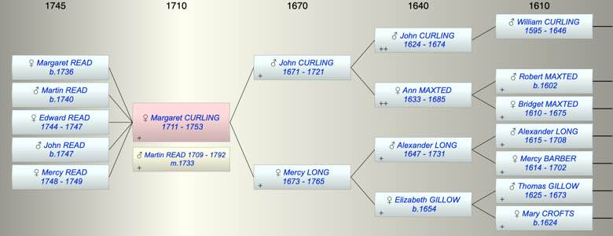

| [Index] |
| Margaret CURLING (1711 - 1753) |
|  |
| b. 1711 at St Laurence |
| m. 18 Feb 1733 Martin READ (1709 - 1792) at Woodnesborough |
| d. 16 Dec 1753 at St Laurence aged 42 |
| Parents: |
| John CURLING (1671 - 1721) |
| Mercy LONG (1673 - 1765) |
| Children (5): |
| Margaret READ (1736 - ) |
| Martin READ (1740 - ) |
| Edward READ (1744 - 1747) |
| John READ (1747 - ) |
| Mercy READ (1748 - 1749) |
| Events in Margaret CURLING (1711 - 1753)'s life | |||||
| Date | Age | Event | Place | Notes | Src |
| 1711 | Margaret CURLING was born | St Laurence | Note 1 | ||
| 1721 | 10 | Death of father John CURLING (aged 50) | St Laurence | ||
| 18 Feb 1733 | 22 | Married Martin READ (aged 24) | Woodnesborough | Note 2 | |
| 1736 | 25 | Birth of daughter Margaret READ | St Laurence | Note 3 | |
| 1740 | 29 | Birth of son Martin READ | St Laurence | Note 4 | |
| 1744 | 33 | Birth of daughter Edward READ | St Laurence | Note 5 | |
| 1747 | 36 | Birth of son John READ | St Laurence | Note 6 | |
| 1747 | 36 | Death of daughter Edward READ (aged 3) | St Laurence | Note 7 | |
| 1748 | 37 | Birth of daughter Mercy READ | St Laurence | Note 8 | |
| 1749 | 38 | Death of daughter Mercy READ (aged 1) | St Laurence | Note 9 | |
| 16 Dec 1753 | 42 | Margaret CURLING died | St Laurence | Note 10 | |
| Personal Notes: |
| She had five children two died in infancy leaving three which agrees with her mother's will. Edward and Mecry died in infancy see MI |
| Created on a Mac™ using iFamily for Mac™ on 8 Oct 2023 |